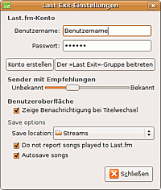
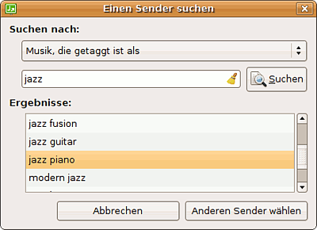
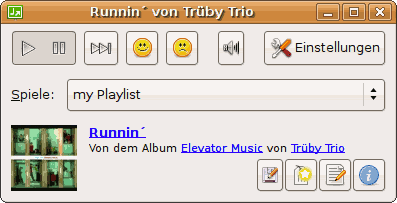

Last-Exit
Archivierte Anleitung
Dieser Artikel wurde archiviert, da er - oder Teile daraus - nur noch unter einer älteren Ubuntu-Version nutzbar ist. Diese Anleitung wird vom Wiki-Team weder auf Richtigkeit überprüft noch anderweitig gepflegt. Zusätzlich wurde der Artikel für weitere Änderungen gesperrt.
Anmerkung: Das Projekt wird nicht mehr betreut und das Programm bekommt keinen Verbindung mehr zu Last.fm.
Zum Verständnis dieses Artikels sind folgende Seiten hilfreich:
 Last-Exit
Last-Exit  ist ein von Iain Holmes und Brandon Hale entwickelter schlanker GTK-basierter Player für LastFM, der auf kleinem Raum eine Fülle von Funktionen für die Verwendung von Last.fm
ist ein von Iain Holmes und Brandon Hale entwickelter schlanker GTK-basierter Player für LastFM, der auf kleinem Raum eine Fülle von Funktionen für die Verwendung von Last.fm  bietet, die z.T. sogar über die Möglichkeiten des offiziellen LastFM Players hinausgehen.
bietet, die z.T. sogar über die Möglichkeiten des offiziellen LastFM Players hinausgehen.
Neben dem regulären Last-Exit-Player existiert eine gepatchte Ausführung, mit der das Aufnehmen des Streams von Last.fm auf Knopfdruck oder auch automatisch erfolgen kann. Die Dateien werden dann - meist in 128kbit/s-CBR-Qualität - nach dem Muster Künstler - Album - Titel.mp3 in einem einstellbaren Verzeichnis abgelegt. Die Verwendung ist in Deutschland zur privaten Nutzung nach Urhebergesetz §53 legal. Eine stabile Internetverbindung mit Flatrate erscheint sinnvoll, da innerhalb von 10 Stunden über 600 MByte Daten heruntergeladen werden...
Installation¶
Seit Feisty Fawn ist Last-Exit in der Standard-Version in den Ubuntu-Paketquellen vorhanden.
last-exit (universe)
Der Quellcode der neuesten Original-Version 6.0 (Stand März 2008) kann hier  bezogen und kompiliert [5] werden. Diese ist allerdings nicht dazu geeignet auf die in diesem Artikel beschriebenen Weise gepatcht zu werden.
bezogen und kompiliert [5] werden. Diese ist allerdings nicht dazu geeignet auf die in diesem Artikel beschriebenen Weise gepatcht zu werden.
Dafür benötigt man ein für die gepatchte Version vorbereitetes last-exit-6-1savepatch~hardy2-*.tar.gz-Quellcode-Archiv, das hier heruntergeladen werden kann. Zur Erstellung der gepatchten Version müssen ggf. diese Pakete
build-essential
fakeroot
jackd (universe)
installiert [1] werden. Mit
sudo apt-get build-dep last-exit
werden die zur Kompilierung des eigentlichen Paketes benötigten Abhängigkeiten/Pakete installiert.
Dann das last-exit-6-1savepatch~hardy2-*.tar.gz-Archiv entpacken und im dabei entstandenen Ordner last-exit-6 mit
fakeroot debian/rules binary
das .deb-Paket erstellen. Bei unverändertem Quellcode-Verzeichnis wird beim Betrieb standardmäßig das Überschreiben bereits vorhandener Dateinamen verhindert (siehe dazu Kapitel "Patchen").
Falls es mit dem vorbereiteten Archiv Probleme geben sollte (ev. bei 64-bit) kann der Code auch mit
wget https://launchpad.net/ubuntu/hardy/+source/last-exit/6-1/+files/last-exit_6.orig.tar.gz wget https://launchpad.net/ubuntu/hardy/+source/last-exit/6-1/+files/last-exit_6-1.diff.gz wget https://launchpad.net/ubuntu/hardy/+source/last-exit/6-1/+files/last-exit_6-1.dsc
Ab Jaunty¶
wget https://launchpad.net/ubuntu/jaunty/+source/last-exit/6-1/+files/last-exit_6.orig.tar.gz wget https://launchpad.net/ubuntu/jaunty/+source/last-exit/6-1/+files/last-exit_6-1.diff.gz wget https://launchpad.net/ubuntu/jaunty/+source/last-exit/6-1/+files/last-exit_6-1.dsc
heruntergeladen werden.
Anschließend wird im Downloadverzeichnis mit
dpkg-source -x last-exit_*.dsc
das Quellcode-Verzeichnis erstellen.
Dann das notwendige Patch-Archiv hier oder als Last-Exit-6-1-patches-*.tar.gz von hier herunterladen und entpacken. Es enthält neben dem eigentlichen 01_last-exit-6-savefix.patch von Robert-André Mauchin weitere Patches, mit denen das Archivieren gesteuert werden kann. Nach dem Patchen (siehe Kapitel "Patchen") kann das Paket in der oben beschriebenen Weise erstellt werden.
Die aktuelle Version des Programm hat, neben den im Folgenden beschriebenen sehr sinnvollen neuen Funktionen, den Vorteil, dass sie anstelle der alten Protokoll-Version 1.1 die neue audioscrobbler-Protokoll 1.2 Version benutzt, wodurch ein besseres Zusammenspiel mit Last.fm erreicht wird.
Nach erfolgreicher Installation [6] findet sich das Programm
im Gnome-Menü unter:
"Anwendungen -> Unterhaltungsmedien -> Last-Exit";
im Xfce-Menü unter:
"Applications - > Multimedia -> Last-Exit".

Starten und Einloggen¶
Zur Verwendung der Software ist ein Konto bei Last.fm nötig. Beim ersten Start des Programms [4] erscheint zunächst ein Fenster, in dem ein gültiger Benutzername und das dazugehörige Passwort angegeben werden muss - diese Angaben werden von Last-Exit gespeichert. Ein Link zum Neu-Anmelden ist auch gleich vorgesehen. Mit "Player starten" gelangt man auf das eigentliche Playerfenster. Die meisten Bedienbuttons sind jetzt noch nicht benutzbar.
Konfiguration¶
 Der " Einstellungen"-Knopf öffnet das entsprechende Fenster. Hier lassen sich Benutzer und Kennwort ändern (wirkt sich erst mit Neustart des Players aus). Ebenso kann direkt ein (weiteres) Konto bei Last.fm erstellt oder der Last-Exit-Gruppe auf Last.fm beigetreten werden.
Der Schieberregler beeinflusst die Auswahlkriterien für Sender mit Empfehlungen; so lassen sich entweder vergleichsweise bekannte (also oft "gescrobbelte") ähnliche Titel oder auch obskure Titel von unbekannteren Interpreten bevorzugen, die trotzdem zur Empfehlung passen - sehr gut, um auf gänzlich neue Musik zu stoßen!
Es lässt sich festlegen, ob bei Titelwechsel kurz oben rechts im Bildschirm eine Infofenster mit Cover, Künstler und Titel eingeblendet werden soll oder nicht; dieses Info-Fenster öffnet sich auch, wenn man mit dem Mauszeiger auf das bei Betrieb eingeblendete Icon im oberen Panel zeigt. Mit einem Rechtsklick auf das Icon öffnet sich ein Dropdown-Menü, mit dem die wesentlichen Funktionen des Players gesteuert werden können.
Die neuste Version bringt außerdem die Möglichkeit mit, das Speicherverzeichnis für die gerippten Titel, die standardmäßig im Homeverzeichnis des angemeldeten Benutzers abgelegt werden, frei zu wählen. Empfohlen wird allerdings ein ext2/ext3-formatierter Träger, da auf FAT/NFTS-Systeme bestimmte Zeichen wie "]" oder ":" in Dateinamen nicht akzeptiert werden und folglich Tracks mit solchen Zeichen nicht gespeichert werden können. Das Verzeichnis sollte auch genügend Platz aufweisen; eine Überprüfung, ob genügend Speicherkapazität vorhanden ist, erfolgt nicht. Ein Wechsel kann auch während der Wiedergabe erfolgen; der momentan wiedergebene Titel wird dann (als ganzes!) im neu angegeben Verzeichnis abgelegt. Der Umgang mit bereits existierenden Dateinamen kann beeinflusst werden, siehe Kapitel "Patchen".
Des Weiteren lässt sich angeben, ob Informationen über die wiedergegebenen Titel an Last.fm übermittelt ("gescrobbelt") werden sollen oder nicht. Es kann festgelegt werden, ob Last-Exit alle wiedergegebenen Titel automatisch speichert, oder nur ausgewählte per Knopfdruck gerippt werden sollen - letzteres ist auch während des Betriebs veränderbar.
Senderwahl¶
Achtung!
Seit Start der neuen Lastfm-Seite (am 17.07. 2008 ) funktioniert die Senderwahl nur noch eingeschränkt!
 Mit dem Dropdown-Menü lassen sich verschiedene Sender einstellen; z.T. sind sie nur für Abonnenten von Last.fm nutzbar ("Persönlicher Sender", "Sender mit Favoriten"). Ganz unten in der Liste erscheint der Eintrag "Andere Sender...", wodurch ein weiteres Menü geöffnet wird. Hier können folgende Rubriken ausgewählt werden, zu denen dann eine jeweils passende Angabe gemacht wird:
Musik, die klingt wie, (-> Künstlernamen eingeben)
Musik, die getaggt ist als ( -> Tag
angeben) Sender eines Nachbarn (-> es öffnet sich eine Auswahlliste an "Nachbarn" mit ähnlichem Musikgeschmack wie dem des eingeloggten Benutzers)
Sender eines anderen Benutzers (-> Benutzernamen
eingeben) Musik von Fans von (-> Künstlernamen eingeben, gespielt wird Musik nach dem Geschmack von Benutzern, die den angegebenen Künstler oft und gerne hören)
Sender einer Gruppe (-> Namen der Last.fm-Gruppe
eingeben)
Insbesondere die Möglichkeit, Radiosender aus den von den Last.fm-Benutzern vergebenen Tags zu erstellen stellt eine sehr mächtige Option dar, bei der die grundlegende Idee hinter Last.fm voll zum Tragen kommt. Die eigene Playlist erreicht man anscheinend nur unter der Rubrik "Sender eines anderen Benutzers", dort kann mit der Eingabe "EIGENER BENUTZERNAME"/playlist auf sie zugegriffen werden.
Last-Exit speichert die letzten 10 gewählten Sender, und bietet sie als Auswahlmöglichkeiten in dem Dropdown-Menü an - sehr praktisch, wenn man feste Lieblingssender hat. Auf diese Liste kann jeder gerade eingeloggte Last.fm-Nutzer zugreifen; es gibt kein benutzerspezifisches Menü. Die Liste wird in der Datei ~/.config/last-exit/recent.xml verwaltet; wer Einträge entfernen möchte, kann sie in einem Texteditor bearbeiten; zum Entfernen einzelner Sender jeweils den Namen und die Adresse zwischen <name></name> bzw. <path></path> löschen. Das funktioniert allerdings nur, wenn der Player gerade nicht läuft; die Veränderung greift dann mit dem Neustart. Ansonsten rutschen die Sender mit jeder Neueingabe um einen Platz nach oben; der oberste Eintrag verschwindet dann aus der Liste.
Starten mit bestimmtem Sender¶
Um Last-Exit gleich einen bestimmten Sender spielen zu lassen, kann der Player im Terminal mit der entsprechenden lastfm-Adresse gestartet werden, z.B. also mit
last-exit "lastfm://artist/"Künstlername"/similarartists"
Das funktioniert mit jeder gültigen lastfm-Adresse.
Wiedergabe und Aufnahme¶
 Mit dem " Start/Stop"-Knopf wird die Wiedergabe gestartet (der Player startet nicht immer beim ersten Versuch; da hilft es, die Wiedergabe durch erneutes Drücken zu "Stoppen" und dann wieder zu Starten - das hilft meist auch, wenn die Verbindung einmal abbrechen sollte). Die Titel lassen sich allerdings (aus lizenzrechtlichen Gründen) nicht anhalten; nochmaliges Betätigen führt zum Beenden der Wiedergabe. Der " Skip"-Knopf springt zum nächsten Titel; der " Gefällt mir!"-Knopf befördert den Titel auf die "Favoritenliste" des Benutzers bei Last.fm, der " Missfällt mir!"-Knopf verbannt den Titel endgültig für den gerade eingeloggten Benutzer. Hinter dem " Full-Volume"-Knopf verbirgt sich ein nur für den Player wirksamer Lautstärkeregler - praktisch, um den Player vorrübergehend schnell stumm zu schalten, oder im "Hintergrundbetrieb" bei Titelwechsel hochzufahren, um zu entscheiden, ob der neue Track gerippt werden soll.
Bei laufender Wiedergabe werden im Playerfenster Künstler, Album und Titel als Links dargestellt, über die direkt Informationen von der Last.fm-Webseite im Standardbrowser aufgerufen werden können. Außerdem wird, wenn in den Last.fm-Beständen vorhanden, ein Cover angezeigt.
Der einzige hier sichtbare Unterschied der gepatchten Version zur "Original-Software" ist der " Aufnahme"-Knopf in der Leiste unten im Playerfenster. Mit ihm erfolgt, wenn nicht die automatische Aufnahme gewählt wurde, die Speicherung des momentan wiedergegebenen Titels. Er bleibt nach Betätigung bis zum Start des nächsten Track angegraut. Die Aufnahme lässt sich praktischerweise während der ganzen Wiedergabezeit für den kompletten Titel starten und auch wieder rückgängig machen, wenn man es sich doch anders überlegt hat. Last-Exit legt jeden Tracks in der Datei lastexit-"Benutzername" im /tmp-Verzeichnis ab, die dann, wenn gewünscht, als Datei nach dem Namensschema Künstler - Album - Titel.mp3, bei fehlender Albumangabe auch Künstler - Titel.mp3 im angegebenen Verzeichnis endgültig gespeichert wird; ansonsten wird sie für den nächsten Song sofort wieder überschrieben. Auch während der Aufnahme kann der " Skip"- oder " Start/Stop"-Button betätigt werden; Last-Exit speichert einen Titel nur dann endgültig, wenn er tatsächlich vollständig heruntergeladen ist; unvollständige mp3-Dateien dürften also nicht vorkommen.
Daneben findet sich ein " Tag"-Knopf, mit dem Künstler, Album oder Titel auf der Last.fm-Seite mit "Tags" eigener Wahl versehen werden können. Der " Blog"-Knopf führt direkt zur Blogseite des momentan wiedergebenen Titels; dort kann ein eingeloggter Benutzer dann einen Eintrag hinterlassen. Der " Info"-Knopf stellt die Informationen zu Künstler, Album, Titel und das Cover in einem eigenen kleinen Fenster dar.
Last-Exit läuft anders als Vagalume nur in einer Instanz. ID3-Tags werden (wie z.B. von Archiv/TheLastRipper) nicht erstellt; hierzu bieten sich aber Tag-Programme wie EasyTAG oder Audio Tag Tool an, mit denen dann auch überschaubare Ordnerstrukturen für die Archivierung der Titel angelegt werden können (siehe aber auch unten).
Patchen von Last-Exit¶
Das last-exit-6/debian/patches und contrib-Verzeichnis des angepassten Quellcodes bzw. das Patch-Archiv (Alternativer Link ) enthalten folgende Patches:
01_last-exit-6-savefix.patch: Grundlage für's Archivieren und alle weiteren Patches;
02_checkfile+bugfix.patch: ermöglicht das Abspeichern von Tracks mit dem Zeichen "/" im Namen und verhindert ein Überschreiben einer bereits vorhandenen Datei; beseitigt außerdem einen "bug" beim Scrobbeln der Daten zu Last.fm, und einen, der bei fehlender Albenangabe zum Absturz führen konnte (benötigt 01, wird standardmäßig mit verwendet)
03_filename.patch: verändert den Separator, der für den Dateinamen verwendet wird (benötigt Patches 01 + 02, nicht verwendbar mit 04 + 05)
04_createdir.patch: erstellt Künstler/Album/Titel.mp3-Verzeichnisstrukturen (benötigt Patches 01 + 02, nicht verwendbar mit 03)
05_advancedcheck.patch: erstellt, wenn der Dateiname bereits vergeben ist, eine Datei mit der Erweiterung "Name" (last-exit).mp3 (benötigt Patches 01, 02 & 04, nicht verwendbar mit 03).
06_artist-title-safety.patch: erstellt Künstler-Titel.mp3 (benötigt 01 + 02, nicht verwendbar mit 03. 04 und 05)
Die gewünschten Patches in das last-exit-6/debian/patches-Verzeichnis kopieren und nach der Anleitung am Anfang des Artikels das Paket erstellen; Beispielpakete (gutsy/hardy 32-bit, hardy 64-bit) können von hier heruntergeladen werden.
03_filename.patch¶
Leider bereiten die Dateinamen, die von der gepatchten Version standardmäßig erstellt werden, bei der Weiterverarbeitung der Dateien mit Tag-Programmen z.T. Probleme. Der verwendete Separator " - " kommt in Alben- und Titelnamen häufiger vor, sodass die Zerlegung des Dateinamens zur Erstellung von Tags (und Ordnerstrukturen nach der Hierarchie Künstler/Album/Track.mp3) nicht immer erfolgreich ist, weil ggf. falsch aufgeteilt wird. Auch Tracks, zu denen entweder die Künstler- oder die Albenangabe fehlt, lassen sich mit der vorgegebenen Namenserstellung nur mit größerem Aufwand "vertaggen". Der Patch verändert die Variablen zur Erstellung des Dateinamens für Tracks mit fehlenden Angaben und den verwendete Separator " - ".
Mit dem so gepatchten Player würde man z.B. den Titelnamen Joe Claussell ;;; Rare Elements - Ustad Sultan Khan - Remixes ;;; Aja Mahi (Sacred Rhythm Version).mp3 statt Joe Claussell - Rare Elements - Ustad Sultan Khan - Remixes - Aja Mahi (Sacred Rhythm Version).mp3, oder Brian Adams ;;; unknown ;;; Can't Stop the Thing We Start.mp3 statt Brian Adams - Can't Stop the Thing We Start.mp3 erhalten, die sich durch ihre einheitlichere Struktur und die eindeutigen Separatoren leichter automatisiert weiterverarbeiten lassen. Platzhalter und Separator können theoretisch frei gewählt werden; dazu den Patch vorm Kompilieren im Editor entsprechend bearbeiten, allerdings funktioniert "/" nicht, und führt auch nicht zu in hierarchisierten Ordnern abgelegten Tracks, sondern ggf. zum Abruch des Komplilierens oder später zum schlichten Nicht-Erstellen des endgültigen Titels aus der last-exit-"Benutzername"-Datei.
04_createdir.patch¶
Das Ablegen der Dateien (wie bei Archiv/TheLastRipper Standard) in hierarchisierter Form nach dem Muster /Pfad/zum/Zielverzeichnis/Künstler/Album/Titel.mp3 kann mit Verwendung dieses Patches erreicht werden. Es entstehen im angegebenen Zielverzeichnis für die oben angegebenen Tracks die Verzeichnisstrukturen /Pfad/zum/Zielverzeichnis/Joe Claussell/Rare Elements - Ustad Sultan Khan - Remixes/Aja Mahi (Sacred Rhythm Version).mp3 oder /Pfad/zum/Zielverzeichnis/Brian Adams/unknown/Can't Stop the Thing We Start.mp3.
Vorteil der Hierarchisierung: Das Zielverzeichnis ist geordneter und übersichtlicher (ggf. auch sinnvoll wenn nach und nach komplette Album gespeichert werden sollen). Nachteil: das automatisierte Vertaggen der Datein wird etwas aufwändiger.
05_advancedcheck.patch¶
Dieser Patch sorgt dafür, dass ein Titel von Last.fm, dessen Name im Zielverzeichnis schon vorhanden ist, als Track mit der Erweiterung "Name"(last-exit).mp3 versehen abgespeichert wird. Das kann dann sinnvoll sein, wenn dort bereits eigene Titel im mp3-Format liegen, die nicht von Last.fm stammen, aber ggf. andere Versionen des Titels mit dem selben Namen beinhalten (nicht speziell gekennzeichnete Live-Version, unplugged, etc.). So wird der Last.fm-Titel nicht verworfen, aufgrund der Erweiterung schnell erkannt, und kann dann überprüft werden. Sollte Last-Exit nochmals auf den Titelnamen stoßen, wird dann keine weitere Kopie angelegt; im Terminalbetrieb wird eine entsprechende Meldung ausgegeben (wer tatsächlich mehrere Versionen möchte, wird hier im Forum fündig).
06_artist-title-safety.patch¶
Dieser Patch erstellt die Titel im mp3-Player-kompatiblem Format Künstler-Titel.mp3 ohne Album-Angabe. Da dabei eher mal Dateinamen mehrfach vergebenen werden müssten, wird bei schon vorhandenem Namen eine Datei mit dem Anhang Künstler-Titel (version x).mp3 erstellt; es sind bis zu 255 Versionen eines Dateinamens möglich, sodass wirklich kein eventuell neuer Titel mit gleichem Namen verworfen werden sollte...
Last-Exit unbeaufsichtigt betreiben¶
Wer Last-Exit unbeaufsichtig verwenden möchte, kann diesen WatchDog verwenden - ein Python-Skript, das Grek336 entwickelt hat. Der Wachhund sorgt dafür, dass bei ungewollten Abbrüche, Fehlern etc. das Programm automatisch beendet und dann mit dem selben Sender neu gestartet wird. Dazu wird die Temporärdatei /tmp/lastexit-"benutzername" in regelmäßigen Abständen auf Veränderung überwacht; bei Stillstand tritt der Wachhund dann in Aktion. Das funktioniert allerdings nicht für das "reguläre" Last-Exit; dort existiert schließlich keine Temporärdatei.
Das Skript herunterladen und ausführbar machen; es wird mit den Parametern für das Programm, den Lastfm-Sender, die zu überwachende Datei sowie optional mit dem Sekunden-Wert für das Überwachungsintervall gestartet, also z.B.
/pfad/zum/WatchDog5.py "last-exit" "lastfm://artist/"Künstlername"/similarartists" "/tmp/lastexit-"Benutzername" 45
Wenn der letzte Wert weggelassen wird, sind 60 Sekunden das Standard-Intervall. Das Skript startet beim Aufruf allerdings auch erst mit dieser Verzögerung! Wer sowieso immer den selben Sender verwendet, kann sich einen entsprechenden Starter im Hauptmenü erstellen.
Probleme¶
Komplikationen kann es geben, wenn mehrere Anwendungen gleichzeitig über das selbe Benutzerkonto auf Last.fm zugreifen; es kann dabei zu unvorhergesehenen Wechselwirkungen, ungewolltem Log-Out oder Senderwechsel kommen. Abhilfe kann ggf. ein Zweit-Account schaffen.
Ggf. möchte die Aktualisierungsverwaltung ein selbst kompiliertes gepatchtes Paket durch die "neuste" Version ersetzen; um das zu verhindern, kann Apt-Pinning verwendet werden, siehe auch hier ff. im Forum; bei Verwendung des neusten last-exit-6-1savepatch~hardy2-*.tar.gz wird allerdings eine Version erstellt, die eine "höhere" Versionsnummer hat als die im Repo vorhandene, das Apt-Pinning sollte damit also nicht mehr nötig sein.
Last-Exit stürzt regelmäßig ab, wenn eine Playlist wiedergegeben werden soll, die leer ist oder nur (aus welchen Gründen auch immer) nicht-abspielbare Titel beinhaltet. Dieser Bug ist bekannt, und wird hoffentlich mit der neuen Version bereinigt.
Gegenüber dem offiziellen LastFM Player fehlt eigentlich nur die Möglichkeit, Freunden Musik-Empfehlungen zukommen zu lassen, was sich aber wohl aufgrund des sonstigen Leistungsumfanges und der "Kompaktheit" von Last-Exit verschmerzen lässt. Schön wäre natürlich auch ein Statusbar zur Länge und aktuellen Spielzeit der Titel, der ist aber für die nächste Version schon angedacht.
- Erstellt mit Inyoka
-
 2004 – 2017 ubuntuusers.de • Einige Rechte vorbehalten
2004 – 2017 ubuntuusers.de • Einige Rechte vorbehalten
Lizenz • Kontakt • Datenschutz • Impressum • Serverstatus -
Serverhousing gespendet von